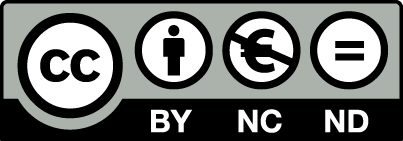

Introduction
Objectifs
Ce document rassemble les supports et consignes pour les 4 séances de travaux pratiques dédiées à la dynamique des populations et des systèmes écologiques.
Bien qu’administrativement rattachés à l’UE Biométrie (Semestre 5, Licence Sciences de la Vie de La Rochelle Université), ces TP s’articulent directement avec les enseignements magistraux du module « Introduction à la dynamique des systèmes » au sein de l’EC Fonctionnement des Écosystèmes.
Les cours magistraux ainsi que l’ensemble de ces 4 séances de TP sont assurés par Florian Orgeret.
À travers ces travaux pratiques, vous mobiliserez le logiciel R comme un outil de simulation numérique pour modéliser, visualiser et assimiler concrètement les processus écologiques abordés en cours :
À travers ces 4 travaux pratiques, vous apprendrez à mobiliser R pour modéliser et comprendre les processus démographiques :
- Estimer des paramètres démographiques (taux de survie, probabilités de recapture) à partir de données CMR (modèles CJS avec
marked). - Modéliser et projeter la dynamique de populations structurées via des matrices de Leslie et de Lefkovitch (
popbio).
- Décomposer des distributions de tailles polymodales (méthodes de Bhattacharya / Hasselblad via
mixdist). - Ajuster des modèles de croissance individuelle et bâtir des courbes de survie et de production (courbes d’Allen).
- Simuler le comportement et analyser la sensibilité de modèles continus et discrets (croissance logistique).
- Modéliser les interactions biotiques : dynamique prédateurs-proies de Lotka-Volterra et compétition interspécifique.
- Modéliser les probabilités de transition entre états ou communautés écologiques.
- Simuler les dynamiques spatio-temporelles et calculer la distribution stationnaire (état d’équilibre) du système.
Pré-requis
| Domaine | Outils clés | Compétences attendues |
|---|---|---|
| Gestion de projet | RStudio |
Créer un projet, structurer un script reproductible |
| Manipulation | dplyr, tidyr |
Filtrer, transformer, agréger (filter, mutate, summarise) |
| Visualisation | ggplot2 |
Construire des figures lisibles et adaptées au type de variable |
En cas de lacunes sur la syntaxe de base, reportez-vous aux supports précédents : :
Vous aurez de toutes façons besoin de vous référer à ces 2 documents régulièrement au cours de ces TP. Donc gardez-les à portée de main et apprenez à naviguer rapidement dans leurs chapitres et sous-chapitres pour retrouver facilement les informations dont vous avez besoin.
Organisation
Présence obligatoire : Ces 4 séances de modélisation appliquée nécessitent un accompagnement pas à pas ; la présence en salle informatique est requise.
Environnement de travail : Vous pouvez utiliser les postes informatiques de l’université ou votre propre ordinateur portable (Windows, macOS, Linux). Assurez-vous d’avoir installé les packages listés au début de ce document (tidyverse, popbio, mixdist, marked).
Contenu des séances
Séance consacrée à la structure et à la démographie des populations (1 Structure des populations). Vous aborderez deux approches fondamentales pour quantifier et projeter la dynamique d’une population structurée. Dans un premier temps, vous utiliserez des données de suivi individuel (capture-marquage-recapture) sur le cincle plongeur pour estimer, via les modèles de Cormack-Jolly-Seber (CJS) avec le package marked, les taux de survie apparente et les probabilités de recapture en tenant compte d’effets temporels ou de covariables. Dans un second temps, vous construirez des matrices de transition démographique (matrices de Leslie et de Lefkovitch) à l’aide du package popbio. Vous projetterez la dynamique d’espèces à cycle de vie contrasté (baleine franche, tortue de Floride), calculerez le taux intrinsèque d’accroissement (\(\lambda\)), la structure d’âge stable, ainsi que les sensibilités et élasticités des différents paramètres du cycle de vie. L’objectif est de vous apprendre à lier l’estimation empirique de paramètres démographiques de terrain à la modélisation prédictive matricielle pour éclairer la gestion et la conservation des populations.
Séance consacrée à l’analyse de cohortes (2 Analyse de cohortes). Avant votre sixième séance de TP, vous devriez être en mesure de réaliser l’analyse de cohorte d’une population étudiée pendant plusieurs années afin de produire les courbes de croissance, de survie et d’Allen d’une cohorte d’intérêt. Vous devrez en particulier importer et mettre en forme des données issues d’un suivi de terrain, produire les structures démographiques instantanées à chaque date d’échantillonnage, faire les décompositions polymodales afin de récupérer les informations utiles au sujet de la cohorte dont on souhaite assurer le suivi et enfin, produire, pour cette cohorte, les courbes de croissance, de mortalité et d’Allen.
Séance consacrée à l’étude des systèmes dynamiques (3 Systèmes dynamiques). Vous devrez coder différents modèles d’évolution d’une population (mortalité exponentielle, croissance exponentielle, croissance logistique) ou de plusieurs populations ou espèces (modèle prédateurs-proies, modèle de compétition). Ces modèles généreront des données que vous devrez représenter graphiquement. Vous devrez enfin modifier la valeur de certains paramètres de ces modèles pour comprendre leur influence sur le comportement des systèmes dynamiques étudiés. Pour la première fois, vous utiliserez donc
RStudiopour produire des données qui suivent un modèle que vous spécifierez, au lieu d’importer des données déjà disponibles. L’objectif est ici de vous montrer comment utiliser le logiciel pour étudier le comportement de modèles théoriques de dynamique des populations, et de vous permettre d’évaluer l’importance et la sensibilité des conditions initiales et des valeurs des paramètres des modèles.Séance est consacrée à l’utilisation des chaînes de Markov dans un contexte d’écologie des communautés (4 Les Chaînes de Markov). Vous verrez comment utiliser
RStudiopour coder une chaîne de Markov permettant d’étudier les successions écologiques et l’atteinte de l’état d’équilibre d’un écosystème abritant plusieurs communautés végétales. Comme pour la semaine précédente, vous devrez coder le système, représenter graphiquement les résultats de simulation, et examiner les conséquences de changements des conditions initiales ou des probabilités de transitions entre communautés. Comme toujours, l’objectif est donc double : vous permettre de découvrir de nouvelles possibilités d’analyses réalisables avecRetRStudio, et vous permettre de mieux comprendre les notions fondamentales abordées dans les cours magistraux.
Recommandation sur les outils d’assistance (IA)
Les modèles d’IA générative (ChatGPT, Claude, etc.) sont d’excellents alliés pour dépasser la frustration technique. N’hésitez pas à les solliciter lorsque votre code bloque : ils sont particulièrement efficaces pour expliciter un message d’erreur de la console, débusquer une coquille de syntaxe ou vous aider à corriger un bug. Utilisée comme un tuteur pour débloquer la programmation, l’IA fait gagner un temps précieux et soutient votre progression.
Gardez toutefois à l’esprit la finalité de ces simulations : construire pour comprendre. Obtenir un code fonctionnel en copiant l’énoncé dans une IA est désormais immédiat, mais court-circuiter la réflexion se fait au détriment de l’assimilation des concepts écologiques, qui demande un véritable effort d’apprentissage sur le temps long.
Utilisez donc ces outils pour comprendre vos erreurs et réparer votre code, jamais pour vous dispenser de réfléchir aux mécanismes biologiques modélisés.
Évaluation(s)
Il n’y aura pas d’évaluation notée directement sur ces séances de TP, ni de compte rendu technique ou de script R à rendre.
L’examen terminal portera non pas sur la maîtrise du code R ou sur la technicité de la programmation, mais exclusivement sur la compréhension approfondie des concepts d’écologie des populations et de dynamique des écosystèmes illustrés durant ces séances.
L’ordinateur et le logiciel R ne sont ici que des instruments pédagogiques : manipuler les modèles, faire varier les paramètres et observer directement les trajectoires démographiques appliquent la logique du « construire pour comprendre ».
Prendre le temps de suivre activement chaque séance, faire l’effort de manipuler les modèles par vous-mêmes, refaire les exercices et étudier attentivement les corrigés constituera donc un avantage certain pour réussir l’examen théorique.
Licence
Ce support est mis à disposition selon les termes de la licence Creative Commons CC BY-NC-ND 4.0.

Attribution — Pas d’utilisation commerciale — Pas de modification sans accord préalable des auteurs.